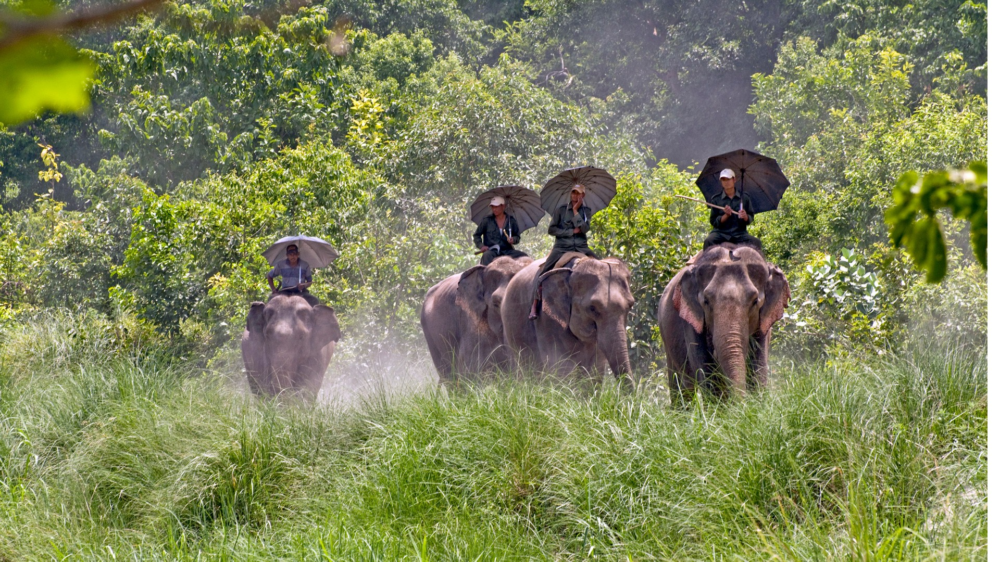

Largest National Park Of Terai.
Birth Place Of Lord Buddha
A heaven waiting to be discovered in the west
❮
❯
Province No 5
Province No. 5 is one of the seven provinces established by the new constitution of Nepal which was adopted on 20 September 2015. As per a 17 January 2018 cabinet meeting, the city of Butwal has been declared the interim state capital of Province No. 5.
Area: 22,288 km²
Literacy: 66.4%
Capital: Butwal
Districts: 12
Main Official Language: Nepali (51.6%)
Other Official Language(s): 1. Tharu (15.26%);
2. Awadhi (12.18%)
Districts of nepal, List of cities in Nepal, and List of gaupalikas of Nepal
Province No. 5 is divided into 12 districts, which are listed below. A district is administrated by the head of the District Coordination Committee and the District Administration Officer. The districts are further dived to municipalities or rural municipalities. The municipalities include four sub-metropolitan cities and 32 municipalities. There are 73 rural municipalities in the province.
List of districts of province no 5:
1.Arghakhanchi
2.Banke
3.Bardiya
4.Dang
5.Eastern Rukum
6.Gulmi
7.Kapilvastu
8.Parasi
9.Palpa
10.Pyuthan
11.Rolpa
12.Rupandehi
TOP TOURIST PLACES TO VISIT IN PROVINCE NO. 5 NEPAL
1. LUMBINI, NEPAL - BIRTHPLACE OF BUDDHA
Lumbini is a Buddhist pilgrimage site in the Rupandehi District of Nepal.
Being rich in cultural and religious diversity, Nepal has many people who live together in harmony who follow different culture and religion and have their own rituals and practices.
The majority of the people in Nepal follow the Hindu religion with Buddhism coming a close second on the majority scale.
Lumbini is the place where Queen Maya Devi gave birth to Siddhartha Gautama in 563 BCE.
Siddhartha Gautama, who achieved Enlightenment sometime around 528 BCE, became Lord Gautama Buddha and founded Buddhism.
Lumbini is one of many magnets for pilgrimage that sprang up in places pivotal to the life of Gautama Buddha.
Listed in the World Heritage Site status by UNESCO in 1997, Lumbini has a number of temples, including the Maya Devi Temple and several others. Many monuments, monasteries and a museum-
the Lumbini International Research Institute, are also within the holy site.
2 . BARDIYA NATIONAL PARK
Ride through the silent jungle catching wildlife by surprise in the largest national park of Nepal in Bardiya or take nature walk under the guidance of expert naturalists with years of experience.
Combine it with white-water rafting in the longest river of Nepal, Karnali, where you could even spot dolphins or gharial on a lucky day.
And meet the charming Rana Tharu and Dangora people of southern Nepal to know more about their culture.
A trip to Bardiya is certain to stay in your memory as one of the most enduring experiences in Nepal.
These jungles in the south-western parts of Nepal are an hour’s flight away with an incredible variety of mammals, reptiles and birds.
Bardiya National Park is also one of the most undisturbed protected areas in the Terai and is home to the endangered Royal Bengal tiger and Nepal's famous one-horned rhinoceros.
The park located in the far western district of Bardiya, is bordered by River Karnali in the west, the Churia range in the north,
while the River Babai flows right through.
3. Ranighat Palace & TANSEN PALPA
Get charmed by one of the "off-the-beaten-track" destinations in Nepal, the ancient hill town of Tansen.
Walk its cobbled bazaar to find a perfect Dhaka topi for yourself.
Traverse around Shreenagar Hills, do a day hike to the Rani Mahal on the banks of the Kali Gandaki River or
go backpacking along the river trail to find enchanting new routes.
Visit Ranighat Palace Also known as the Taj Mahal of Nepal,
Rani Mahal was built as the symbol of love for the beloved late wife of General Khadga Shumsher Jung Bahadur Rana.
The palace was built in the 19th century at the banks of the Kali Gandaki River, between Syangja and Palpa.
Situated at the distance of 13 km from Tansen, the palace looks attractive sitting on a massive rock at a secluded and a quiet place.
4. Swargadwari
Sworgadwari (स्वर्गद्वारी) is a hilltop temple complex and pilgrimage site in Pyuthan District,
Nepal commemorating the special role of cows in Hinduism.
It is said to have been founded by Guru Maharaj Narayan Khatri (Swami Hamsananda) who spent
most of his life in the vicinity herding and milking thousands of cows. According to traditional
stories, some of his devotees followed him to see where he took the cows, but they never could find him.
According to older people of the locality, he came from Rolpa to the present temple site and asked
the owner of that land (landlord) to donate the land to him. He dug the land and obtained curd mixed
rice and fire. He had explained that these things were those buried by pandavas in Dwapar yuga, when
they worshipped in this place before departing to heaven. The landlord was astonished .
He agreed to handover the land instantly. Thereafter the holy fire is burning continuously till then.
Bivut (ash) of the firewoods burnt by the holy fire is believed to cure different physical disorders
like headache, stomach ache etc.
5. Dhorpatan Hunting Reserve
Dhorpatan Hunting Reserve lies in Rukum, Myagdi and Baglung Districts in the Dhaulagiri Himal range
in West Nepal. Putha, Churen and Gurja Himal extend over the northern boundary of the reserve.
Dhorpatan Hunting Reserve was established in 1983 and was gazetted in 1987.
Management objectives of the reserve allow sports hunting and preserve a representative high altitude ecosystem in West Nepal. The reserve extends over an area of 1325 sq.
km and is the only hunting reserve in the country to meet the sports hunting needs of Nepalese and foreign hunters of blue sheep and other g
ame animals. The higher elevations remain snow-capped throughout the year.
Altitudes vary from 3000 m. to more than 7000 m. The flat meadows above tree line (4000 m), locally known as Patan, is divided into six blocks for hunting management purposes.The reserve is surrounded by villages on all sides except the north. Local people depend on the reserve to meet their requirements for wood, fuelwood, fodder, and pasture.
The refugee camp near the reserve headquarters has put more human pressure in the forest. Every year livestock grazing activities begin from February and last until October. More than 80,000 livestock enter the reserve.
The reserve is characterized by alpine, sub-alpine and high temperate vegetation. Common plant species include fir, pine, birch, rhododendron, hemlock, oak, juniper and spruce. Pasturelands occupy more than 50% of the total area of the reserve at higher elevations.Besides national parks and wildlife reserves His Majesty’s Government of Nepal has also set aside a hunting reserve at Dhorpatan where controlled hunting of some species is allowed. Covering an area of 1,325 sq. km., the reserve is situated on the southern flanks of Mt. Dhaulangiri I (8,167 m.) in districts of Rukum, Baglung and Myagdi in western Nepal.
6. Ridi
Ridi is situated on the banks of the Kali Gandaki River where it joins the smaller Ridi River to form a confluence and changes its direction of flow from north-south to west-east. Ridi is also called Ruru Kshetra in Sanskrit. There are a number of temples in Ridi, the most prominent ones being those of Rishikesh and Mukundeshwar. This area also contains a number of caves, including Kanya Gufa which has been the abode of sadhus, or holy men. Among the many festivals and fairs (melas) held in Ridi, the Maghe Sankranti draws the maximum number of pilgrims who take a bath in the waters of the Kali Gandaki River.
7 .Dang Valley
Dang Deukhuri District is located in Inner Terai in Province No. 5 in midwestern Nepal. The district, with Ghorahi as its headquarters, covers 2,955 km² and has a population (2011) of 548,141. Tulsipur, the second biggest city of Dang, is a transportation hub. There are numerous temples and gumbas in Dang Deukhuri district Like Ambikeshwari Temple, GhorahiRatnanath (Gorakhnath) Mandir, Chaughera
Barakune Daha, Ghorahi Sawarikot Chhilli kot, Chhilli Kot Gupha, Chameri GuphaMalika Temple, Mulkot CaveRam Janaki TempleSirasthan, Srigaun Temple, Sukaura Mound ,Bagar Baba mandir, RiharShiva Cave, Dhankhola Tuhi valley Suikot Temple Jakhera Tal Temple Purandhara water fall.
8 . Jaljala -- The Hidden Treasure of Rolpa
Jaljala located in Thabang Village Development Committee (VDC) of the Rolpa district is one of the newly opened
Trekking Areas in Nepal. Visit to Jaljala in the spring time transports you to a magical land with colourful
carpet of wild blossoms, green meadows and Rhodendron forests. The presence of more than hundred of species
of birds and wild life such as leopard, bear, Musk deer and wild boar is another attraction of Jaljala.
One can have sweeping view of Mt. Sisne, Mt. Putha, Mt. Dhaulagiri, Mt. Annapurna and other mountains.
Mainly populated by Magar, one of the indigenous people of Nepal, it is a wonderful experience to have a
close look at their way of life style and culture. Jaljala is also a pilgrim site where pilgrims from
different regions of Nepal visit annually.
Contact us
9847012653
sptechz5@gmail.com